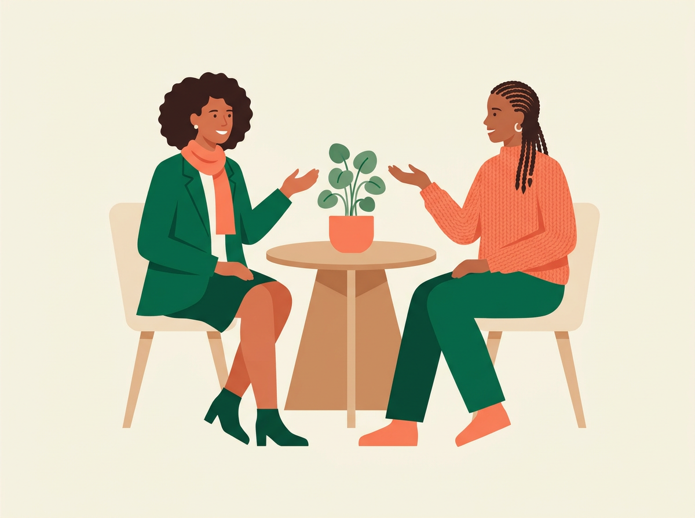

¿Tu mente no para?
Pregúntate cuánto de tu día se va en preocupaciones.
Hablemos de esto →
A veces seguimos adelante, trabajamos, estudiamos y cumplimos con nuestras responsabilidades mientras por dentro sentimos que algo no está bien. No tienes que afrontar todo en silencio.
En Conéctamente encontrarás un espacio de acompañamiento emocional en español, cercano y respetuoso, donde podrás hablar de lo que estás viviendo, ordenar tus ideas y encontrar herramientas de bienestar para avanzar.
Dar el primer paso también es una forma de cuidarte.
Un espacio de acompañamiento emocional pensado para hispanohablantes
Tal vez últimamente:
No necesitas tener todas las respuestas para pedir ayuda. A veces, comenzar una conversación es suficiente para dar el primer paso.
Quiero recibir acompañamientoConéctamente nace de una idea sencilla: nadie debería sentirse solo cuando más necesita ser escuchado.
Creamos este espacio para acercar el acompañamiento emocional a las personas que necesitan ser escuchadas y orientadas, sin importar dónde se encuentren. Aquí puedes hablar de lo que estás viviendo con respeto, privacidad y sin juicios. Nuestro objetivo no es decirte cómo debes vivir tu vida — es acompañarte para que puedas reflexionar sobre lo que estás experimentando y encontrar herramientas de bienestar que te ayuden a afrontar tu situación.
Importante: Conéctamente ofrece acompañamiento y orientación emocional. No es un servicio de salud, no realiza diagnósticos ni tratamientos, y no reemplaza la atención de un profesional de salud con licencia en tu lugar de residencia.
Un espacio individual y privado para hablar sobre aquello que te preocupa, reflexionar sobre lo que estás viviendo y conocer herramientas de bienestar.
Cuando no sabes exactamente qué te está pasando, conversar con alguien que te escuche puede ayudarte a organizar tus pensamientos y entender mejor tus emociones.
Acompañamiento durante conflictos, cambios, dificultades personales y situaciones que afectan tu bienestar.
Un espacio para hablar de lo que estás experimentando y conocer estrategias de bienestar para afrontar situaciones que generan preocupación o agotamiento.
Apoyo durante nuevas etapas, rupturas, cambios laborales, mudanzas, decisiones importantes u otras transiciones de vida.
Nuestro enfoque busca combinar profesionalismo, estructura y calidez humana.
Comenzamos por tu historia, tus preocupaciones y aquello que te está llevando a buscar ayuda.
Conversamos sobre cómo te sientes y qué necesitas en este momento.
Compartimos herramientas de bienestar pensadas para tu situación y tus objetivos.
El proceso se adapta a tu ritmo, respetando tu historia y tus necesidades.
No se trata de cambiar quién eres. Se trata de acompañarte para que cuentes con más herramientas de bienestar para afrontar lo que estás viviendo.

Escríbenos y cuéntanos brevemente qué estás buscando.
Te ayudamos a identificar el tipo de acompañamiento que puede ser adecuado para tu situación.
Coordinamos contigo el día y horario disponible.
La sesión se realiza online mediante una plataforma de videollamada.
Tendrás un espacio para hablar, ser escuchado y reflexionar sobre aquello que te preocupa.
No necesitas desplazarte ni cambiar toda tu rutina para buscar apoyo. Puedes acceder a tu sesión desde un lugar tranquilo y privado utilizando una computadora, tablet o teléfono con conexión a internet. Las sesiones se realizan mediante videollamada y tienen una duración aproximada de una hora.
Completa el formulario y un miembro de nuestro equipo se pondrá en contacto contigo. También puedes escribirnos directo por WhatsApp si lo prefieres.
Nuestra historia
Conéctamente nació con el propósito de crear un espacio humano y cercano para quienes necesitan hablar, sentirse comprendidos y recibir orientación y acompañamiento emocional.
Sabemos que pedir ayuda no siempre es fácil. Muchas veces esperamos hasta sentir que ya no podemos más, o pensamos que nuestros problemas "no son tan importantes" como para buscar acompañamiento. Pero no tienes que esperar a estar al límite.
Creemos que cuidar tu bienestar emocional también significa darte permiso para detenerte, hablar y pedir apoyo cuando lo necesites. Cada historia es diferente. Cada persona merece ser escuchada.
Conoce nuestro enfoque
Detrás de Conéctamente hay personas comprometidas con brindar un acompañamiento responsable, respetuoso y humano. Entendemos que no hay dos historias iguales — por eso creemos que escuchar realmente es lo más importante.
Nuestro compromiso es ofrecerte un espacio donde puedas expresarte con libertad, sentirte respetado y reflexionar sobre aquello que hoy necesitas comprender o cambiar.
Puedes hablar de lo que estás viviendo con respeto y confidencialidad.
Comunicar lo que sentimos puede ser más fácil cuando podemos hacerlo en nuestro propio idioma.
Recibe acompañamiento sin importar dónde te encuentres.
Responsabilidad y calidez humana pueden ir de la mano.
Buscamos facilitar el acceso al acompañamiento emocional.
Tu historia, tus necesidades y tus objetivos son el punto de partida.
Elige el plan que se ajuste a tu momento. Sin permanencia mínima. Precios en dólares estadounidenses (USD). Son servicios de acompañamiento y orientación emocional, no de atención en salud.
$45 / sesión
1 sesión de 50 minutos
$79.99 / mes
2 sesiones de 50 minutos al mes
$149 / mes
4 sesiones al mes
$189 / mes
4 sesiones al mes
Tres preguntas para empezar a pensar en ello. No son un test ni un diagnóstico.
Pregúntate cuánto de tu día se va en preocupaciones.
Hablemos de esto →Piensa en cómo ha estado tu ánimo últimamente.
Hablemos de esto →Piensa en qué aspectos de tu relación te gustaría conversar.
Hablemos de esto →No. Conéctamente ofrece acompañamiento y orientación emocional. No realizamos diagnósticos ni tratamientos, ni reemplazamos la atención de un profesional de salud con licencia en tu lugar de residencia. Si necesitas terapia o atención clínica, te recomendamos acudir a un profesional habilitado.
Conéctamente no es un servicio de emergencia. Si tú o alguien cercano está en riesgo inmediato, busca ayuda ahora: en Estados Unidos llama o escribe al 988 (opción 2 para español) o llama al 911; en Colombia llama a la línea de emergencias 123 o a la línea 192, opción 4 (salud mental).
No. No necesitas contar con un diagnóstico para buscar acompañamiento. Puedes contactarnos y explicarnos qué estás viviendo para orientarte.
Nuestro servicio está diseñado para realizarse online mediante videollamada.
Las sesiones tienen una duración aproximada de una hora.
Las sesiones se realizan en español.
No tienes que llegar con todo claro. Puedes empezar contándonos cómo te sientes y, juntos, ordenar tus ideas.
Puedes escribirnos directamente por WhatsApp o llenar el formulario de contacto. Cuéntanos brevemente qué necesitas y te indicaremos los siguientes pasos.
No tienes que esperar a sentirte al límite para pedir acompañamiento. Da un primer paso hacia tu bienestar.
Tu historia importa. Lo que sientes importa. Tú importas.